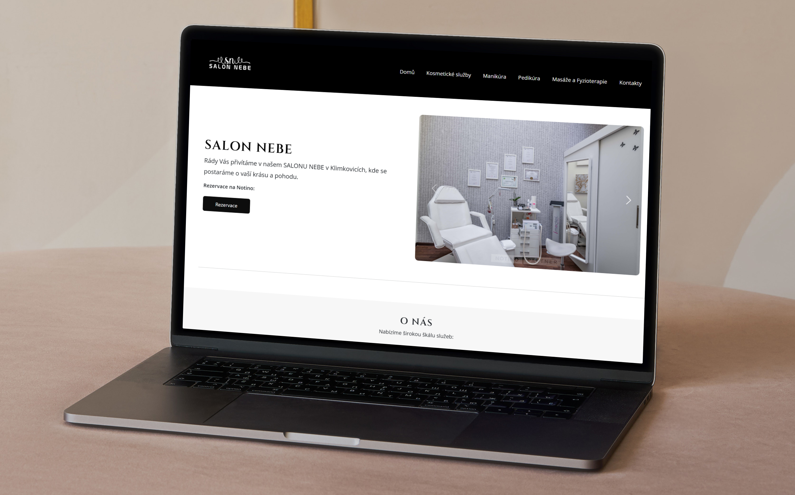
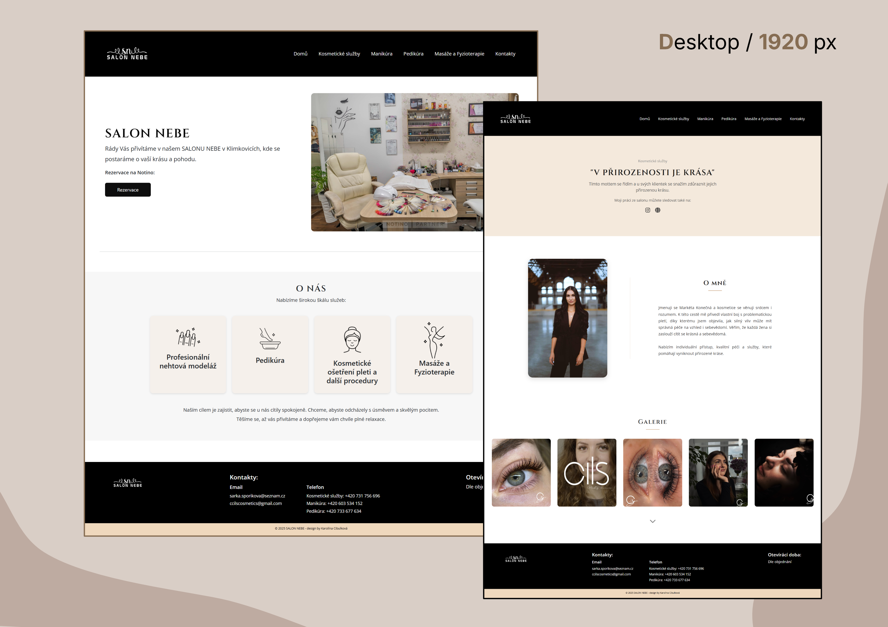
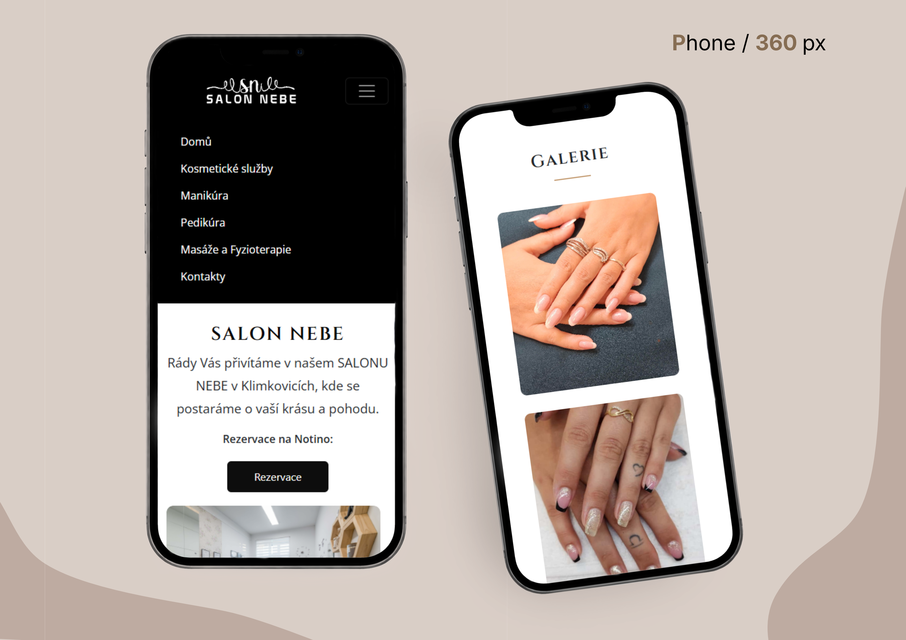
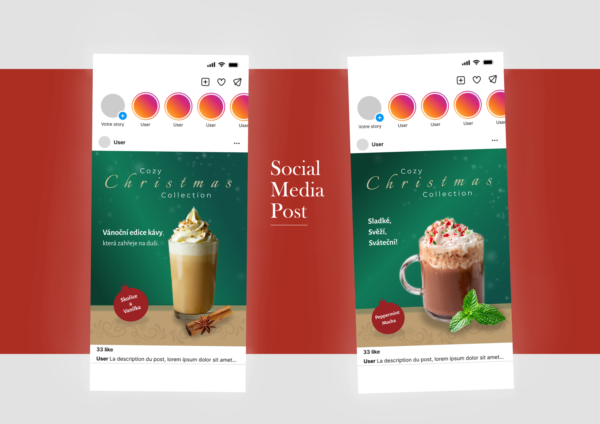
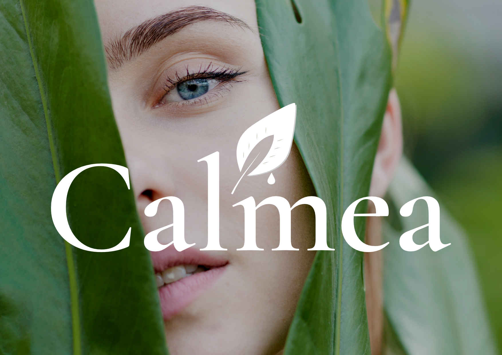
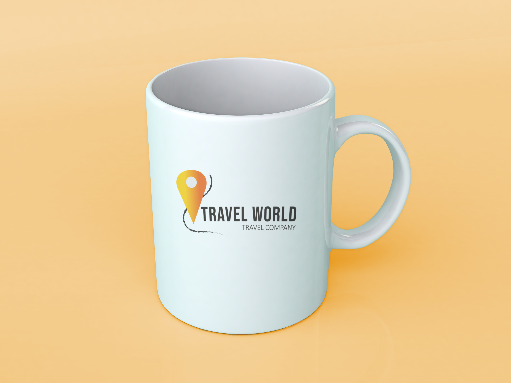
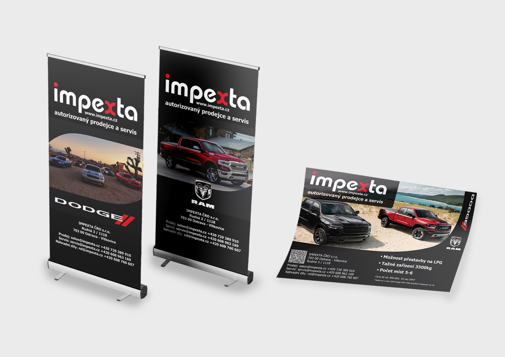

Projekty



Salon Nebe
Webová stránka pro beauty salon v Klimkovicích.

Vánoční kampaň
Návrh vizuálního stylu a šablon pro sociální sítě.



Calmea
Kompletní návrh vizuální identity pro fiktivní značku přírodní kosmetiky.



Travel World
Vizuální identita cestovní značky vytvořená jako závěrečný projekt na SŠ.

Časopis S.A.F.E
Design layoutu a vizuálního stylu magazínu zaměřeného na kyberbezpečnost.

Impexta tiskoviny
Návrh roll-upů a tiskovin pro automobilový sektor.